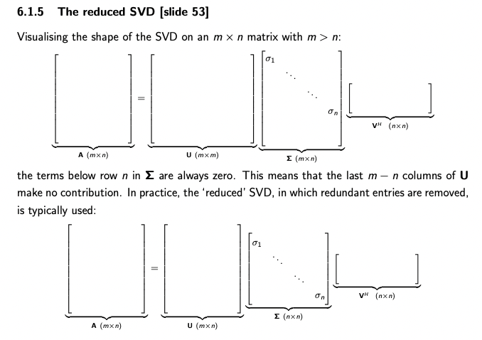
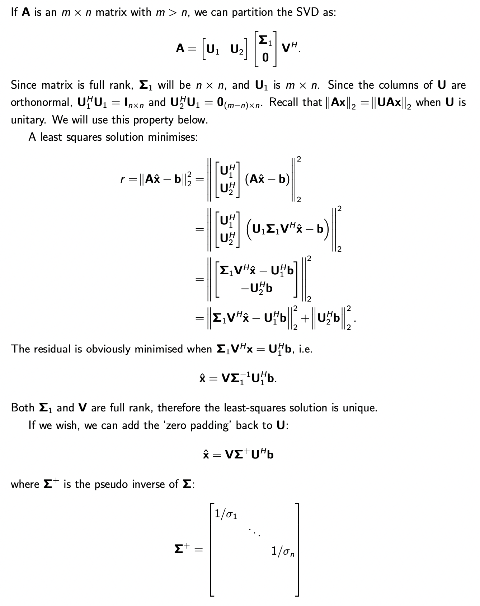
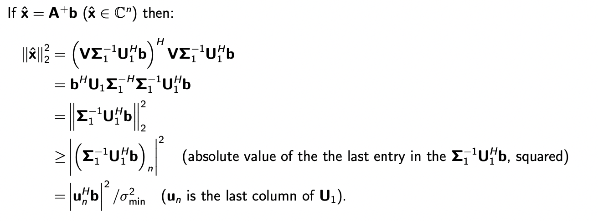
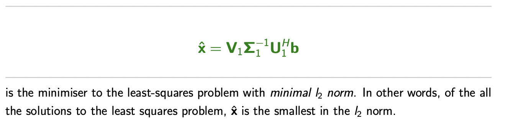

Notes on Linear Algebra
Linear Algebra - Definitions
Vectors
Vector Space
A vector space $\mathcal{V}$ is a set of elements (called “vectors”) that is closed under addition and scaler multiplication.
Subspace
A subspace of a vector space is a subset that obeys the rules of a vector space.
Inner Product
The dot (or scaler, or inner) product is an operation between two equal length vectors that yields a scaler.
$$x^H y = \sum_i \bar x_i y_i$$
The dot product yields a complex number, and $x^Hy = (y^{H}x)^*$.
Note that if we are dealing with complex vectors, the order of dot product matters for this precise reason.
Matrices
Conjugate Transpose
The conjugate transpose of a matrix $M$ is denoted as $M^H$.
A Matrix $M$ is Hermitian if $M^H = M$
Eigenpairs
For an $n\times n$ matrix $A$, $(\lambda, x)$ is an eigenpair if
$$Ax = \lambda x$$
where $\lambda$ is an eigenvalue of $A$, and $x$ is the corresponding eigenvector. Recall that $\lambda$ can be zero, but $x$ must be non-zero.
For special matrices, their eigenpairs have the following properties:
- For Hermitian matrix, the eigenvalues are real, the eigenvectors are orthogonal
Unitary Matrix
A matrix $Q\in\mathbb{C}^{n\times n}$ is a unitary matrix if $Q^H=Q^{-1}$. That is, $Q^HQ =QQ^H=I$. If $Q$ is real, we would call it a orthogonal matrix.
Positive definite and semi-positive definite
A Hermitian matrix is positive definite if $x^HMx>0\space \text{for any } x\in \mathbb{C}^n \text{\}0$
A Hermitian matrix is semi-positive definite if $x^HMx\geq0\space \text{for any } x\in \mathbb{C}^n \text{\}0$
In mathematics, Sylvester’s criterion is a necessary and sufficient criterion to determine whether a Hermitian matrix is positive-definite. It is named after James Joseph Sylvester.
Sylvester’s criterion states that a n × n Hermitian matrix M is positive definite if and only if all the following matrices have a positive determinant:
- the upper left 1-by-1 corner of M,
- the upper left 2-by-2 corner of M,
- the upper left 3-by-3 corner of M,
- …
- M itself.
Matrix Rank
The rank of the matrix $A\in\mathbb{C}^{m\times n}$ is the number of linearly independent rows or columns (the number is equal). it satisfies $rank(A)\leq\min(m,n)$
A matrix is full rank if $rank(A)=\min(m,n)$, and rank deficient if $rank(A)<\min(m,n)$.
Norms
A norm of an object is a non-negative, real-valued number that is a measure of ‘how big’ something is and which allows ordering. A norm must statisfy the following properties:
$$||x||>0\ \text{when }x\neq 0,\ ||x||=0\ \text{when } x=0$$
$$||kx||=|k|||x||$$
$$||x+y||\leq||x||+||y||$$ Triangle inequality
Vector norms
A particular family of norms are known as $l_p$-norms:
$$||x||p=\left(\sum{i=1}^n|x_i|^p\right)^{1/p}$$
For example, the familiar $l_2$ norm is $||x||_2=(|x_1|^2+…+|x_n|^2)^{1/2}$
and the $l_\infty$ norm (also norm as the maximum norm):
$||x||_\infty=\max_i|x_i|$
We can also define vector norms with respect to a matrix $A$, subject to some restrictions on the matrix:
$$||x||^2_A=<x,Ax>$$
where $<\cdot,\cdot>$ is an inner product. The above definition is often referred to as an “energy norm”, in which $A$ is positive definite.
Matrix norms
Operator norms
A norm of a matrix $A$ is defined as:
$$||A||=\max_{x\in\mathcal{C}^n\text{\}0}\frac{||Ax||}{||x||}$$
The operator norm measures the ‘maximum amount’ by which the matrix $A$ can re-scale a vector $x$ (in relative terms). We can write $||Ax||\leq||A||\ ||x||\text{ for any }x$
$||A||1$ (1-norm) is the max column norm. $||A||_\infty$ ($\infty$ norm) extracts the maximum row norm and $$||A||_2^2=\lambda{max}(A^HA)$$. If $A$ is Hermitian, then $||A||2 = |\lambda{max}(A)|$
Apparently, the vector and matrix 2-norms are invariant under rotation. That is, pre-multiplying a unitary matrix doesn’t change the norm.
Note that operator norm also obeys triangle inequality $||A+B||\leq||A||+||B||$ and multiplication inequality $||AB||\leq||A||\times||B||$
Frobenius norm
Some matrix norms treat the entries of a matrix like the entries of a vector. One such norm is the Frobenius norm, defined by $||A||F=\sqrt{\sum_i\sum_j|a{ij}|^2}$. It is also invariant to rotations.
Condition Number
The condition number of a matrix $A$ is:
$$\kappa(A) = ||A||\ ||A^{-1}||$$
For the 2-norm, we see that $\kappa_2(A)=\frac{\sqrt{\lambda_{max}(A^HA)}}{\sqrt{\lambda_{min}(A^HA)}}$, if $A$ is Hermitian, $\kappa_2(A)=\frac{|\lambda(A)|{max}}{|\lambda(A)|{min}}$
Iterative Methods for Linear System
Direct Methods
A direct method computes a solution of $Ax=b$ in a known/predictable number of operations. Solving a system via LU decomposition is an example of a direct method.
Iterative Methods
An iterative method seeks an approximate solution via a series of steps (iterations), and is usually terminated when the error/residual falls below a prescribed threshold (in the chosen norm).
Finding the largest eigenvalue and eigenvector
Rayleigh quotient
The Rayleigh quotient gives us a way to estimate the eigenvalue based on an estimate of the eigenvector. It is defined as the following:
$$\lambda^*=R(A,x)=\frac{x^HAx}{x^Hx}$$
where $x$ is our estimated eigenvector with $Ax\approx \lambda x$. We can show that this minimizes the $l_2$ cost $||Ax-\lambda x||_2^2$
To show that, we start with any $\mu\in \mathcal{C}$ and show that $||Ax-\mu x||_2^2 \geq ||Ax-\lambda x||_2^2$
The Rayleigh quotient is often defined for Hermitian matrices only, in which case it must be real-valued. For Hermitian matrices, if the error in the eigenvector is $O(\epsilon)$, than the error in the eigenvalue estimated is $O(\epsilon^2)$
Stationary methods for $Ax=b$
We decompose the matrix operator $A = N-P$. So rather than solving the exact problem, we have $Nx = b + Px$, and we compute each iteration using:
$$Nx_{k+1}=b+Px_k$$
The key is to split $A$ such that $Nx=f$ are easy to solve, examples involve:
- Richardson iteration: $N=I$
- Jacobi method: $N = diag(A)$
- Gauss-Seidel: $N = L(A)$ is the lower triangular
Convergence
Defining the error at the $k$-th iteration $e_k = x_{exact}-x_k$. We have
$$Ne_{k+1} = Pe_k\ \rightarrow e_{k+1} = N^{-1}Pe_k$$
For convergence, we need the eigenvalues (absolute value) of $N^{-1}P$ to be smaller than $1$. The largest absolute eigenvalue is often denoted $\rho(A)$ and is known as the spectral radius. The stationary methods based on spliting will converge if $\rho(N^{-1}P)<1$
Smaller $\rho$ leads to faster convergence.
Conjugate Gradient Method (CG)
The Conjugate gradient method is a Krylov subspace method, which is a more powerful family of the methods than the stationary methods.
Singular Value Decomposition
Definition
The Sigular Value Decomposition (SVD) is defined as follows: for an $m\times n$ matrix A, its singular value decomposition is
$$A = U\Sigma V^H$$
where $U$ and $V$ are unitary matrices. $\Sigma$ is a diagonal matrix, with diagonal entries $\sigma_i$ (the ‘singular value’) stored such that $\sigma_1 > \sigma_2 > … > \sigma_p > 0$. If $A$ is Hermitian, then the definition falls back to that of eigen-decomposition.
The columns of $V$ is the eigenvectors of $A^HA$. The columns of $U$ is the eigenvectors of $AA^H$.
To ensure the eigenvectos have the correct sign, we need to enforce $AV = U\Sigma$ because doing eigen-decomposition on $A^HA$ and $AA^H$ (note both are Hermitian) brings ambiguity to the signs $Q\Lambda Q^H = (-Q)\Lambda (-Q^H)$

Low rank approximations
If we expand the SVD, we get $A = \sum_{i=1}^r \sigma_i u_iv_i^H$ where $r$ is the number of non-zero singular values. $u_i$ is the $i$th column of $U$ and $v_i$ is the $i$th column of $V$. The above is the expression of a matrix as a sum of rank-1 matrices.
If we just take $k<r$ singular values we can obtain a low rank approximation of $A = \sum_{i=1}^k\sigma_i u_iv_i^H$. We can show that this is the best approximation of $A$ than any other matrix of rank $k$.

The low rank approximation allows us to compress large matrices (e.g. images etc).
Effective Rank
When taking measurements, noise is often unavoidable and this can make it hard to detect (near) linear dependencies. For example:

SVD can be used to obtain the effective ranks of the matrix by saving ranks with singular values that are greater than the noise level.
Least Square Solutions
Recall that the least square solution of $Ax=b$ is $\hat x = (A^HA)^{-1}A^H b$. Where $A^+=(A^HA)^{-1}A^H$ is the psuedoinverse.
We can use SVD to solve least square problems. It is known to be the most stable method to solve such problems.
Full Rank Case
Since the matrix is full rank, the least square solution is unique.

This also relates to the normal equations as follows:

A simple analysis on the 2-norm of the solution $x$ implies that the sensitivity (or stability) of the solution is related to the smallest singular value $\sigma_{min}$. If $\sigma_{min}$ is small, then the least square solution will be large and very sensitive to changes in $b$.

Rank Deficient Case
Rank deficient refers to situation when the corresponding singular values are zero or small. The least square solution is not unique but we can find a solution that is minimized in 2-norm.

where $V_1$ and $U_1$ are truncated from $V$ and $U$ as follows:

Jinghong Chen @2021-2022